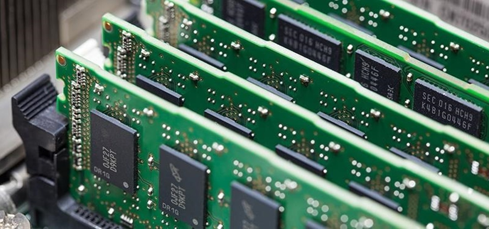
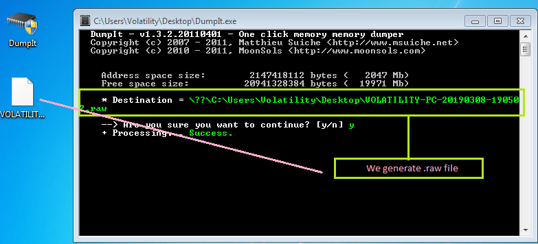
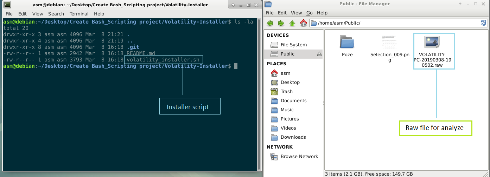
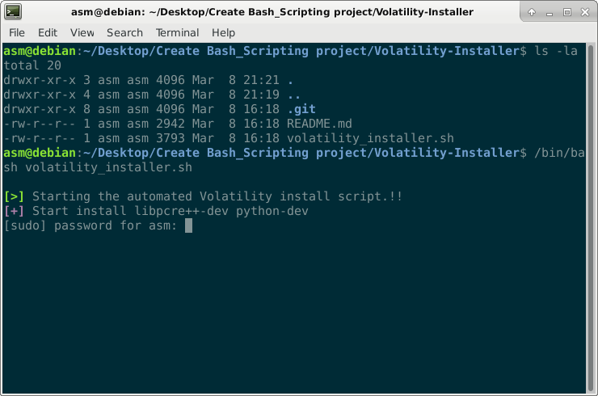
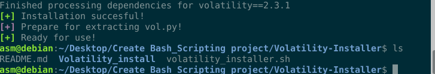
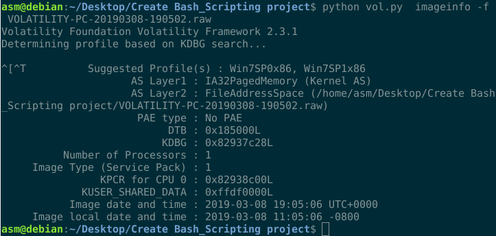
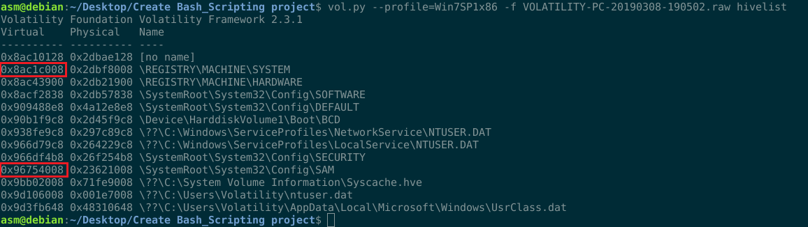
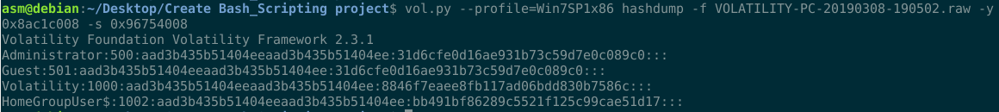
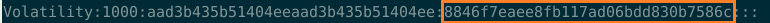
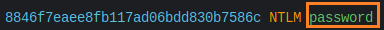

Hello everyone. Today i will speek about Volatility: Extract Password from RAM and more stuff like extract information about Windows 7 SP1x86 using Volatility Framework. This idea to extract information from ram memory is due to the University Professor who said something interesting: RAM can store information while the ROM is used for reading. Keep in mind, volatile memory, in contrast to non-volatile memory, is computer memory that requires power to maintain the stored information it retains its contents while powered on but when the power is interrupted, the stored data is quickly lost.
Maybe you ask , what is this volatility framework and for what is use? Volatility is an open source software programs for analyzing RAM (Random Access Memory) in 32 bit/64 bit systems. It supports analysis for Linux, Windows, Mac, and Android systems. It is based on Python and can be run on Windows, Linux, and Mac systems. It can analyze raw dumps, crash dumps, VMware dumps (.vmem), virtual box dumps, and many others.
First step we need to taking RAM Dump from Windows. I used DumpIt!

Now is time for install Volatility Framework for analyze this raw file. For install is need require : To install this framework for Linux you need to install next dependencies and package. For Linux you may have to install a few other packages/libraries as prerequisites for the following recommended packages. Exemple sudo apt-get install pcregrep libpcre++-dev python-dev -y and packages like.
1) Distorm3 - Powerful Disassembler Library For x86/AMD64.
2) Yara - A malware identification and classification tool.
3) PyCrypto - The Python Cryptography Toolkit.
So I decide to make a little script in bash scripting for installing this tool. You can find here : https://github.com/T3jv1l/Volatility-Installer



For performing analysis using Volatility we need to first set a profile to tell Volatility what operating system the dump came from, such as Windows 7, Linux, Mac OS.
./vol.py imageino –f "Destination of the memory Dump"
We can see that Volatility suggests using the profile for Win7SP0x86, Win7SP1x86
Now is time to use --profile=Win7SP1x86 and use hivelist to locate the virtual addresses of registry hives in memory, and the full paths to the corresponding hive on disk, use the hivelist command. For more information about Registry Hives check this link: https://docs.microsoft.com/en-us/windows/desktop/sysinfo/registry-hives.

What we have here? If you can see we look for to virtual address. Why I choose %SystemRoot%/system32/config/SAM? Because the user passwords are stored in a hashed format in a registry hive either as a LM hash or as a NTLM hash. This file can be found in %SystemRoot%/system32/config/SAM and is mounted on HKLM/SAM. Here we have 0x96754008.
Registry Machine System contain inside HKLM\SYSTEM\CurrentControlSet\Control\hivelist.The registry tree contains information for controlling system startup and some aspects of device configuration. Here we have 0x8ac1c008
Now we use hashdump for get creds.To use hashdump, pass the virtual address of the SYSTEM hive as -y and the virtual address of the SAM hive as -s, like this:

Boom we have a credentials about password , i made a little video about this technique, you can found here : https://youtu.be/YVv2B4D_ysg

Decrypt this hash and boom we have password in clear text!!

I hope you like this article about Forensics and sorry for my bad English , i am not a native speaker (Happy Hack)
References!!
https://github.com/volatilityfoundation/volatility/wiki/Command-Reference#hashdump